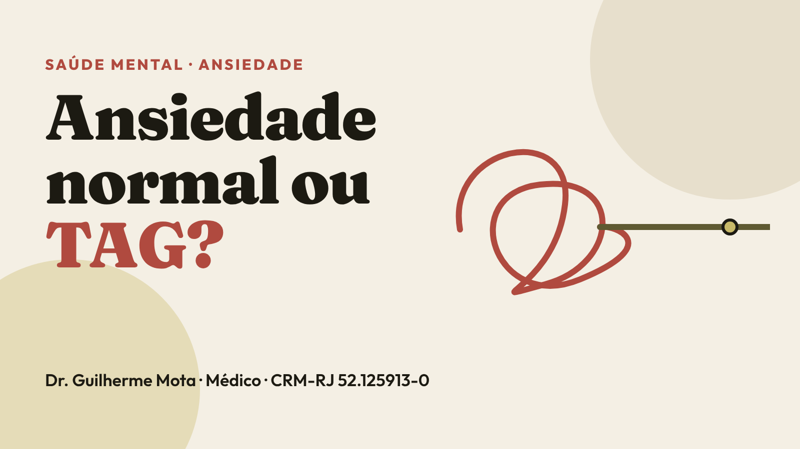

Ansiedade normal: uma resposta do corpo
Todo mundo sente ansiedade. É uma resposta natural a situações de pressão, como uma prova, uma entrevista de emprego ou uma decisão importante. Ela nos deixa em alerta e, na dose certa, ajuda a agir.
A ansiedade comum costuma ter motivo claro, aparece em momentos específicos e diminui quando a situação passa. Segundo o TeleCondutas do TelessaúdeRS-UFRGS, ela se torna um transtorno quando surge sem um estímulo externo claro ou com magnitude suficiente para justificá-la, e com intensidade, persistência e frequência desproporcionais.
O que é o TAG
O Transtorno de Ansiedade Generalizada é marcado por preocupação e nervosismo excessivos com várias situações do dia a dia. Segundo o Manual MSD, atinge cerca de 2% dos adultos no mundo.
Para pensar em TAG, os critérios costumam incluir:
- Preocupação excessiva e difícil de controlar.
- Presente na maioria dos dias, por seis meses ou mais.
- Em várias áreas ao mesmo tempo: trabalho, saúde, dinheiro, família.
- Acompanhada de três ou mais sintomas, como inquietação, cansaço fácil, dificuldade de concentração, irritabilidade, tensão muscular e problemas de sono.
Como diferenciar
A diferença não está em sentir ansiedade, e sim em três pontos:
- Intensidade: a preocupação é maior do que a situação pede.
- Duração: não passa, e se repete na maioria dos dias por meses.
- Impacto: atrapalha o trabalho, os estudos, o sono ou as relações.
Se você se reconheceu, isso não é diagnóstico. Apenas uma avaliação profissional pode dizer o que está acontecendo, inclusive para descartar causas físicas ou efeitos de medicamentos.
Tem tratamento
O TAG tem tratamento, e ele costuma combinar duas frentes:
- Psicoterapia: a terapia cognitivo-comportamental (TCC) é a que tem maior benefício comprovado. Ela ajuda a identificar pensamentos que aumentam a preocupação e a ajustar comportamentos.
- Medicação, quando necessário: a decisão é individual e feita com o médico, que explica benefícios, riscos e tempo de uso. Alguns remédios levam semanas para fazer efeito, e outros não devem ser interrompidos de repente.
Exercício físico, técnicas de relaxamento e cuidado com o sono podem ajudar como complemento. A combinação certa varia de pessoa para pessoa.
Quando procurar ajuda
Procure uma avaliação profissional se a preocupação:
- dura meses e aparece na maioria dos dias;
- não some mesmo quando você tenta se acalmar;
- atrapalha o sono, o trabalho, os estudos ou as relações;
- vem com sintomas físicos, como tensão constante, cansaço e dificuldade de concentração.
Atendimento urgente: dor no peito e falta de ar merecem avaliação médica imediata, para descartar causas físicas. Em emergência, ligue para o SAMU (192). Se você tem pensamentos de não querer viver, busque ajuda agora: o CVV atende 24 horas, gratuitamente, pelo 188.
Fontes
- Transtorno de ansiedade generalizada, Manual MSD, versão para a população (consultado em 2 nov 2026).
- TeleCondutas: Transtornos de Ansiedade, TEPT e TOC. TelessaúdeRS-UFRGS, 2017 (consultado em 2 nov 2026).
Revisado em 2 de novembro de 2026.
Texto educativo e informativo. Não substitui avaliação médica individual.
Dr. Guilherme Mota · Médico · CRM-RJ 52.125913-0